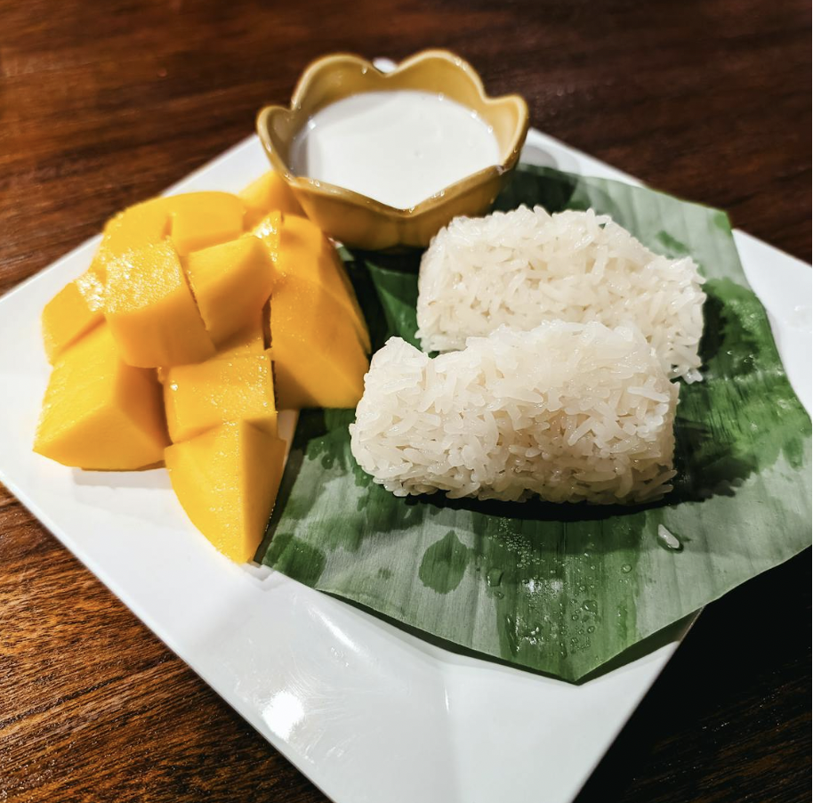

Mango Sticky Rice

Yield: 4-6 servings
A sweet and satisfying dessert made with soft, glutinous rice cooked in creamy coconut milk and paired with juicy slices of golden mango. This tropical treat is perfect after a long day of farming or fishing. Inspired by the flavors of summer and the gentle pace of life in Stardew Valley, it’s a dish that brings comfort, warmth, and a little sunshine to your table - no matter the season!
Ingredients
- 1 (13.5 to 14 oz) can full-fat coconut milk
- 1/2 to 2/3 cup granulated sugar, as desired
- Kosher salt
- 2 cups Thai sweet rice (sticky or glutinous rice), soaked for at least 4 hours and up to overnight
- 2 large or 4 small ripe Ataulfo or Manila mangos
Special Equipment Needed
- Steamer insert and large pot
- Cheesecloth
Steps
- Prepare the Coconut Sauce: In a medium saucepan over medium heat, combine the coconut milk, sugar, and ¾ teaspoon of salt. Stir until smooth, then let simmer gently for about 15 minutes, stirring frequently and scraping down the sides. Remove from heat, measure out ½ cup of the sauce, and set it aside to cool. Cover the remaining sauce in the saucepan with a lid.
- Steam the Rice: Fill a large pot with 2 inches of water and bring it to a boil with a tight-fitting lid. Line a large steamer insert with a double layer of damp cheesecloth. Drain the soaked sticky rice and spread it evenly over the cloth. Gather the sides of the cheesecloth and tie it into a bundle.
- Place the steamer insert into the pot, cover, and steam the rice for about 15 minutes. Check if the rice holds together in one piece when lifted with a spatula. If not, steam for 5 more minutes. Once it holds, flip the rice bundle over and steam for another 10–15 minutes, until the grains are translucent, tender, and sticky.
- Finish the Sticky Rice: Remove the rice bundle and let it cool slightly. Carefully unwrap and discard the cheesecloth. Add the warm rice to the saucepan with the reserved coconut sauce (not the ½ cup set aside) and stir gently to combine without mashing the grains. Cover and let sit for 20 minutes, stirring once halfway through, until the rice absorbs the sauce and becomes creamy and sticky.
- Slice the Mangos: Peel the mangos. Cut the flesh from both sides of the pit, then slice the pieces lengthwise into ¼-inch strips.
- Assemble and Serve! Spoon the sticky rice into 4–6 bowls or short glasses. Top with sliced mango, drizzle with the reserved coconut sauce, and sprinkle with toasted sesame seeds or chopped cashews. Serve right away for the best texture and flavor.
Home